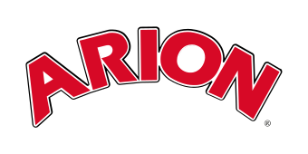
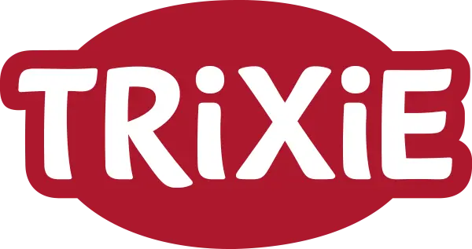

Les Cabots de Fernelmont accompagnent maîtres et chiens avec des méthodes douces et respectueuses, autour de Katia, éducatrice canine depuis plus de 10 ans.
Chaque cours est pensé pour créer un vrai lien entre vous et votre chien — dans le respect de son rythme et du vôtre.
Notre histoire, notre philosophie et l'esprit qui anime Les Cabots de Fernelmont.
En savoir plus →Obéissance, socialisation, agility, confiance et rapport chien-maître.
Voir les activités →Portrait de notre éducatrice canine, plus de 10 ans aux côtés des chiens et de leurs maîtres.
Faire connaissance →Une question, une envie de rejoindre le club ? Appelez ou écrivez-nous directement.
Nos coordonnées →Croquettes Arion et accessoires Trixie : les marques que Katia utilise elle-même au quotidien avec ses propres chiens.
Toute la sélection vous attend dans votre espace membre.
Pas besoin de venir aux cours pour profiter de la boutique : devenez membre et gâtez votre chien dès aujourd'hui !
Découvrir la boutique
Des croquettes haut de gamme conçues en Belgique avec des vétérinaires et nutritionnistes, avec des gammes sans gluten adaptées à la taille, l'âge et la sensibilité de chaque chien.

Fabricant allemand fondé en 1974, aujourd'hui l'un des plus grands d'Europe pour les accessoires chiens et chats : laisses, colliers, couchages, jouets, avec un excellent rapport qualité-prix.
Contactez-nous par téléphone ou par mail — nous répondons volontiers à toutes vos questions sur les cours et les inscriptions.